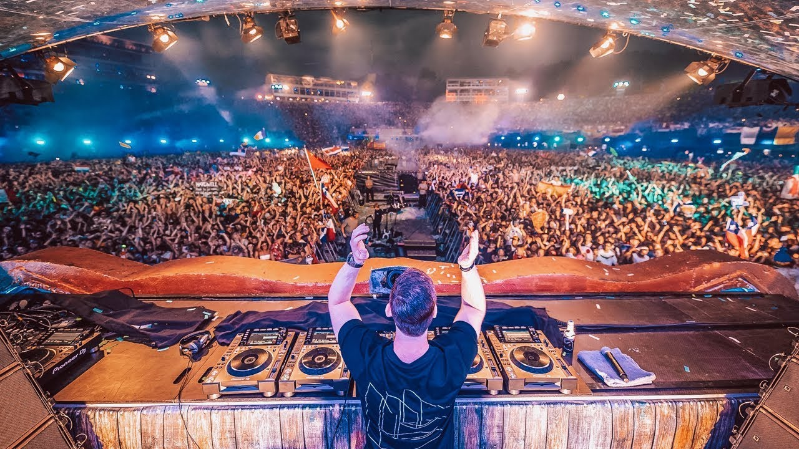

Tomorrowland 2021
Boom, Bélgica del 16 al 18, y del 23 al 25 Julio
Organizadores: We Are One World, Tomorrowland Foundation y LiveStyle


Tomorrowland es un festival de música electrónica de baile celebrado anualmente en la localidad de Boom (Bélgica). El festival es organizado por las empresas propias del festival (We Are One World y Tomorrowland Foundation) en conjunción con la promotora estadounidense LiveStyle, y se calcula que anualmente acuden más de 400.000 personas de casi 200 nacionalidades distintas. Es oficialmente el festival más grande del planeta.
A mediados de la década de los '00, los hermanos Manu y Michiel Beers, quienes trabajaban en la empresa holandesa promotora de eventos, ID&T, concibieron la idea de crear este evento, en un paraje cercano al municipio de Boom, Bélgica. La primera edición del festival se llevó a cabo el 11 de agosto de 2005 en el Área Recreativa Provincial DeSchorre, en la comuna y municipio de Boom. En ella actuaron Armin van Buuren, David Guetta, Coone, entre otros. El festival era organizado, año con año, por la empresa holandesa ID&T, hasta que, en el año 2013 se anunció la compra de esta empresa por parte de la promotora de eventos con sede en Los Angeles, LiveStyle, de forma que, la organización del evento, pasó desde ese año a LiveStyle directamente. Así mismo, los hermanos Beers, decidieron fundar una empresa (We Are One World), y una fundación (Tomorrowland Foundation), las cuales, en conjunto con LiveStyle, hasta la fecha se encargan de organizar dicho festival.
Su nombre —Tomorrowland: La tierra del mañana en español, los escenarios y el ambiente se encuentran rodeados de una decoración que simula un mundo de magia y fantasía. El festival en sí, ofrece una variedad de subgéneros dentro de la música electrónica. Así mismo, consta de un camping a las afueras del recinto del festival, llamado DreamVille, para aquellos asistentes que deseen hospedarse lo más cerca posible. "DreamVille" ofrece distintas comodidades, ya sea un lugar donde poner tu propia tienda de campaña o una mansión para un determinado número de personas. Añadido a esto, la entrada al DreamVille ofrece poder asistir a "The Gathering", una pre-fiesta al festival realizada desde el mediodía del jueves hasta pasada la media noche y que suele incluir la participación de dj's incluidos en el line-up del fin de semana.
The preparations for Tomorrowland 2021 are currently ongoing. Governmental instructions will be followed up closely during these preparations. The well-being, health, and safety of the People of Tomorrow, our partners, our neighbors, the artists, and our team are still our top priority. We hope we will be able to celebrate love, unity, and friendship with all of you next summer. Every visitor will be updated with open and transparent communication about Tomorrowland 2021 as soon as we have more information.